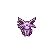
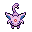

Pokédex / #196

Espeon #196
Psychic
By reading air currents, it can predict things such as the weather or its foe's next move.
Generation 2 · Johto

Stats
| Attack | 65 | |
|---|---|---|
| Defense | 60 | |
| Sp. Atk | 130 | |
| Sp. Def | 95 |
In the wild
| Wild level | 85–95 |
|---|---|
| HP | 65 |
| Experience | 15 |
| Egg groups | Field |
Evolution
- Evolves from Eevee at level 30, with a Soothe Bell, during the day.
Moves
| Level | Move | Type | Category | Power | Energy | Cooldown | Effect | |
|---|---|---|---|---|---|---|---|---|
| 1 | Tackle | Normal | Physical | 15 | 15 | 1s | Tackle is one of the most common and basic moves a Pokemon learns. It deals damage with no additional effects. | |
| 5 | Quick Attack | Normal | Physical | 40 | 40 | 6s | Quick Attack deals damage and has no secondary effect. | |
| 10 | Sand-Attack | Ground | Status | – | 25 | 10s | Sand-Attack lowers the target's Accuracy by one stage. | |
| 15 | Confusion | Psychic | Special | 50 | 60 | 12s | Confusion deals damage and has a 10% chance of confusing the target. | |
| 20 | Swift | Normal | Special | 60 | 60 | 9s | Swift deals damage and ignores changes to the Accuracy and Evasion stats. | |
| 25 | Psybeam | Psychic | Special | 65 | 70 | 16s | Psybeam deals damage and has a 10% chance of confusing the target. | |
| 35 | Wish | Normal | Status | – | 100 | 90s | The turn Wish is used, the user will make a wish. At the end of the next turn, the Pokemon will be healed by half its own maximum HP. | |
| 40 | Stored Power | Psychic | Special | 20 | 80 | 18s | Stored Power deals variable damage depending on the stat modifications of the user. When the user has no stat modifications, Stored Power's base power is 20. Its power increases by 20 for each stat boost the user has. | |
| 45 | Psychic | Psychic | Special | 90 | 100 | 21s | Psychic deals damage and has a 10% chance of lowering the target's Special Defense by one stage. | |
| 50 | Yawn | Normal | Status | – | 100 | 95s | In the turn that Yawn is used, the only effect will be the user yawning at the target. At the end of the next turn, the target (if still active) will fall asleep unless it gets affected by a major status condition in the meantime, a status-protecting move is used (like Safeguard or Uproar), or the battle ends. | |
| 55 | Zen Headbutt | Psychic | Physical | 80 | 80 | 15s | Zen Headbutt deals damage and has a 20% chance of causing the target to flinch. | |
| 60 | Magic Coat | Psychic | Status | – | 100 | 90s | Any move is reflected back to the attacker. | |
| 65 | Future Sight | Psychic | Special | 120 | 120 | 15s | Future Sight deals damage, but does not hit until two turns after the move is selected. | |
| 70 | Last Resort | Normal | Physical | 140 | 140 | 30s | Last Resort does damage and has no secondary effect. |
Field abilities
DigFindFlashCutBlinkTeleportHeadbutt
Special abilities
Synchronize
Egg moves
CaptivateCharmCovetCurseDetectEndureFake TearsFlailNatural GiftStored PowerSynchronoiseTickleWishYawn
Technical machines
BideCalm MindDouble EdgeDouble TeamDream EaterHeadbuttHyper BeamIron TailLight ScreenMimicMud SlapPsychicRageRain DanceReflectRestShadow BallSoftboiledSubstituteSwiftToxicZap Cannon
Drops
| Item | Amount | Chance | |
|---|---|---|---|
| twisted spoon | 1 | 60% | |
| linearly guided hypnose pendant | 1 | 30% | |
| shadow orb | 1 | 24% | |
| cutting fang | 1 | 24% | |
| luminous orb | 1 | 12% | |
| onigiri | 1–5 | 5% | |
| Mind Plate | 1 | 0.1% | |
 | espeon doll | 1 | 0.1% |
| Soothe Bell | 1 | 0.02% | |
| held twisted spoon | 1 | 0.02% | |
| TM 36 | 1 | 0.01% | |
| TM 27 | 1 | 0.01% |